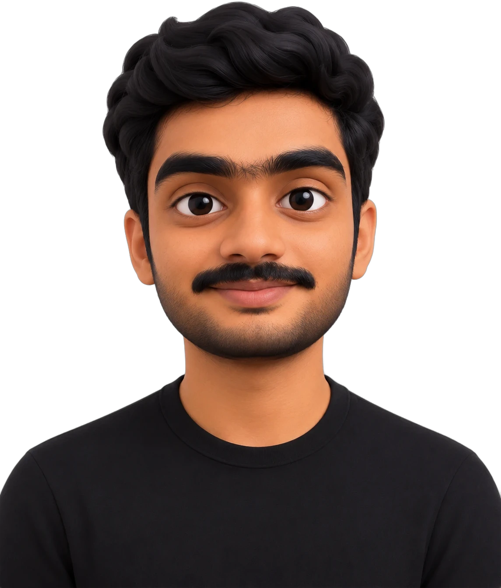

2021
Sep 2021 – Aug 2025
B.Tech, Computer Science and Engineering
Vellore Institute of Technology, Chennai
9.51CGPA out of 10
500+competitive problems solved

Cloud Infrastructure
Lead & Backend Engineer
Architecture, deployments, security, cost and production reliability, with zero-downtime migrations along the way. Below is the route that got me here.